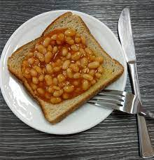
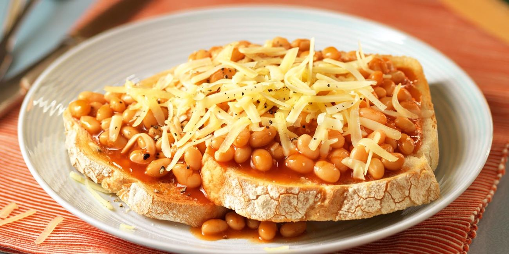

Beans on Toast

Description
quick easy delicious recipe for people on the go!
Serves 2
Ingredients
- 2 slices of white bread
- 1 tin of heinz baked beans
- 40g of grated mature cheddar
Steps
- Place both slices of white bread in toaster.
- Warm beans on the hob for 3 - 4 mins stirring constantly.
- Grate cheese.
- Place toast on plate. Pour on beans.
- Sprinkle with cheese according to taste.

Retrun to top
Return to main page